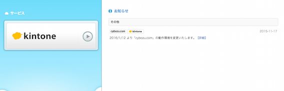

5. kintoneの設定¶
5.1. ユースケース¶
センサーデータのモニタリングのために、AWS IoT Rule, Lambdaを経由で、kintoneにデータをいれます。 共通のkintoneアカウントを利用して可視化いたします。
5.2. 前提条件¶
Lambdaからkintoneにデータを挿入するために以下の情報が必要になります。 今回は、共通のkintoneアカウントを利用するためLambdaも共通のソースを使って実施します。
以下の情報は、既にソースに埋め込まれております。別途、指定する先からダウンロードしてください。
| 項目 | 値 |
|---|---|
| サブドメイン | https://{subdomain}.cybozu.com/ |
| X-Cybozu-Authorization | {BASE64-encoded “id:password”} |
| Authorization | Basic {BASE64-encoded “id:password”} |
5.3. ログイン¶
別途指定する指定先、アカウントID、パスワードにてログインをしてください。 ログイン後の画面からkintoneロゴをクリックします。
IoT Handsonスペースを選択します。
iot-dataというリストが表示されることを確認してください。